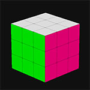

 from ursina import *
app = Ursina()
cube_colors = [
color.pink, # right
color.orange, # left
color.white, # top
color.yellow, # bottom
color.azure, # back
color.green, # front
]
# make a model with a separate color on each face
combine_parent = Entity(enabled=False)
for i, direction in enumerate((Vec3.right, Vec3.up, Vec3.forward)):
e = Entity(parent=combine_parent, model='plane', origin_y=-.5, texture='white_cube', color=cube_colors[i*2])
e.look_at(direction, Vec3.up)
e_flipped = Entity(parent=combine_parent, model='plane', origin_y=-.5, texture='white_cube', color=cube_colors[(i*2)+1])
e_flipped.look_at(-direction, Vec3.up)
combine_parent.combine()
# place 3x3x3 cubes
cubes = []
for x in range(3):
for y in range(3):
for z in range(3):
e = Entity(model=copy(combine_parent.model), position=Vec3(x,y,z) - (Vec3(3,3,3)/3), texture='white_cube')
cubes.append(e)
# rotate a side when we click on it
collider = Entity(model='cube', scale=3, collider='box', visible=False)
def collider_input(key):
if mouse.hovered_entity == collider:
if key == 'left mouse down':
rotate_side(mouse.normal, 1)
elif key == 'right mouse down':
rotate_side(mouse.normal, -1)
collider.input = collider_input
rotation_helper = Entity()
def rotate_side(normal, direction=1, speed=1):
if normal == Vec3(1,0,0):
[setattr(e, 'world_parent', rotation_helper) for e in cubes if e.x > 0]
rotation_helper.animate('rotation_x', 90 * direction, duration=.15*speed, curve=curve.linear, interrupt='finish')
elif normal == Vec3(-1,0,0):
[setattr(e, 'world_parent', rotation_helper) for e in cubes if e.x < 0]
rotation_helper.animate('rotation_x', -90 * direction, duration=.15*speed, curve=curve.linear, interrupt='finish')
elif normal == Vec3(0,1,0):
[setattr(e, 'world_parent', rotation_helper) for e in cubes if e.y > 0]
rotation_helper.animate('rotation_y', 90 * direction, duration=.15*speed, curve=curve.linear, interrupt='finish')
elif normal == Vec3(0,-1,0):
[setattr(e, 'world_parent', rotation_helper) for e in cubes if e.y < 0]
rotation_helper.animate('rotation_y', -90 * direction, duration=.15*speed, curve=curve.linear, interrupt='finish')
elif normal == Vec3(0,0,1):
[setattr(e, 'world_parent', rotation_helper) for e in cubes if e.z > 0]
rotation_helper.animate('rotation_z', -90 * direction, duration=.15*speed, curve=curve.linear, interrupt='finish')
elif normal == Vec3(0,0,-1):
[setattr(e, 'world_parent', rotation_helper) for e in cubes if e.z < 0]
rotation_helper.animate('rotation_z', 90 * direction, duration=.15*speed, curve=curve.linear, interrupt='finish')
invoke(reset_rotation_helper, delay=.2*speed)
if speed:
collider.ignore_input = True
@after(.25*speed)
def _():
collider.ignore_input = False
check_for_win()
def reset_rotation_helper():
[setattr(e, 'world_parent', scene) for e in cubes]
rotation_helper.rotation = (0,0,0)
win_text_entity = Text(y=.35, text='', color=color.green, origin=(0,0), scale=3)
def check_for_win():
if {e.world_rotation for e in cubes} == {Vec3(0,0,0)}:
win_text_entity.text = 'SOLVED!'
win_text_entity.appear()
else:
win_text_entity.text = ''def randomize():
faces = (Vec3(1,0,0), Vec3(0,1,0), Vec3(0,0,1), Vec3(-1,0,0), Vec3(0,-1,0), Vec3(0,0,-1))
for i in range(20):
rotate_side(normal=random.choice(faces), direction=random.choice((-1,1)), speed=0)
randomize_button = Button(text='randomize', color=color.azure, position=(.7,-.4), on_click=randomize)
randomize_button.fit_to_text()
window.color = color._16
EditorCamera()
app.run()